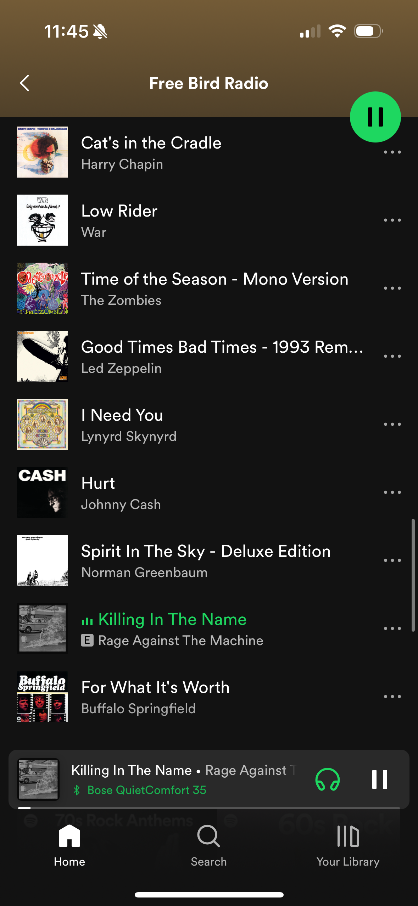

Harry Chapin and RATM: the problem with bleeding interests
Apr 28, 2024 · 575 words · 3 minutes read
Note: this post requires a basic familiarity with the songs discussed. If you’re not familiar with them, I’d recommend you listen to at least a portion of the following three songs:
- Free Bird by Lynyrd Skynyrd (YouTube)
- Cat’s in the Cradle by Harry Chapin (YouTube)
- Killing In The Name by Rage Against The Machine (YouTube)
There are many musical genres I like, and what I listen to usually depends on my mood at the time. Some days, I want to listen to Miles Davis, and some days, I want to listen to Slayer.
Some days, I just want to play some normcore Southern rock. The other day, I opened Spotify, went to Free Bird, and selected “Go to radio”. It gave me a playlist, and after playing on shuffle for a few songs, I realized something was wrong.

What’s the problem here? It’s a little tag at the top of the playlist, just out of sight in that screenshot: “Made for Alex”.
Let me start the rest of this complaint with full acknowledgement that I have nearly zero knowledge of recommendation algorithms. But, to me, this is a problem with personalized recommendations that are over-indexed on your interests. In particular, when these interests are very disparate; I don’t think I would ever expect a human to create a playlist with nearly polar vibe opposites Cat’s in the Cradle and Killing In The Name. Though they can be loosely connected to the song the playlist was based off of, they clearly don’t fit together.
I’ve probably searched for and clicked play on every song in that screenshot, and there’s the problem. They have a clear, explicit signal that these are songs I’m likely to like, and there’s no signal for interest like an explicit signal from the user. But, by focusing on this, this means that the source, this Free Bird track, counts less. Worse still, it means that it’s quick to bleed interests, genres, and vibes, with songs that not only don’t fit, but harshly clash.
It could come back to the philosophical question about the goal of a song radio or playlist, but I don’t think that even fully explains it. If you’re using it as a way to listen to songs you like, this could work, minus the genre clashing. If you’re using it as a way to discover new, similar music, then it really doesn’t work. It leans towards things I already know about, and by prioritizing those, it’s omitting songs I don’t know I don’t know. In this case, I wish there was a separate way to generate these playlists: “ignore everything I’ve ever told you before and just give me songs that are similar to this one”.
In all of my Googling so far, there doesn’t seem to be an easy way to turn this off. I’m also not the only one asking about this.
Spotify’s new daylist sounds like it could be what I’m looking for, as it’s a more “match the vibe” playlist. For example, it says I’ve previously listened to pop art and soundscape on Sunday afternoons, and it created a playlist with “siren, haunting, delicate, soothing, vocal, and songwriter”. All great adjectives, but what if this Sunday I’m driving in Boston traffic instead of doing some delicate vibing?
This is all likely a sign that there are better tools out there for new music discoverability, and I should go discover them too.
In closing, please enjoy: